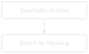
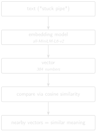

# code/chapter_04/semantic_search.py
from pathlib import Path
def load_chunks(text_dir: Path) -> tuple[list[str], list[str]]:
filenames, texts = [], []
for path in sorted(text_dir.glob("*.txt")):
filenames.append(path.name)
texts.append(path.read_text(encoding="utf-8"))
return filenames, texts4 Semantic Search

Progress ████░░░░░░░░░ 4 / 13 · Estimated time: 60–75 min · Difficulty: 🟠 Intermediate
4.1 Learning objectives
By the end of this chapter, you will be able to:
- Explain, without heavy math, what a text embedding is and why nearby vectors mean similar meaning.
- Generate embeddings for a folder of DDR text using
sentence-transformers. - Retrieve the most semantically similar chunks to a query using cosine similarity, without any exact keyword overlap required.
- Recognise that semantic search over whole documents is an improvement, not a complete fix — and that granularity is what actually determines how well it works.
4.2 Operational Problem
Chapter 3 ended on a real miss: Sarah’s query "stuck pipe" found report #38 (the actual incident) but was blind to report #39, which describes tight hole, high torque, and a decision to pull out of hole — real continued-risk language, written the very next day — without ever using the word “stuck.” Sarah, reading both reports herself, says “yes, obviously, day two of the same problem.” A keyword search can’t see that at all. Let’s find out, honestly, how much of that gap semantic search actually closes.
4.3 Example DDR extract
NoteThe same query, now by meaning
Query: "stuck pipe" (same query Chapter 3 used)
Keyword search (Chapter 3): report #39 not in results at all.
Semantic search, whole-report embeddings (this chapter): report #39
ranks 5th out of 10 — findable, but not prominent. Report #38 (the
actual incident) ranks 2nd.4.4 Theory
An embedding model converts a piece of text into a fixed-length vector of numbers — typically a few hundred dimensions — such that texts with similar meaning end up as vectors that are close together in that space. You don’t need to understand the neural network that produces this vector; you need to understand what it gives you: a numeric representation of meaning you can compare with simple arithmetic.
TipEngineering Translation: Vector / embedding
Think of an embedding as GPS coordinates for meaning. Instead of latitude and longitude, it’s a few hundred numbers — but the idea is the same: two sentences with similar meaning end up with “coordinates” close together, the same way two rigs in the same field end up with similar latitude and longitude, even if their names have nothing in common.
Cosine similarity measures the angle between two vectors — 1.0 for identical direction, 0 for unrelated, negative for opposite. It’s the standard way to compare embeddings because it ignores vector length and focuses purely on direction, which is what carries the meaning here.
TipEngineering Translation: Cosine similarity
Cosine similarity is a compass bearing, not a ruler. It asks “which way is this thing pointing?”, not “how big is it?” — so a short sentence and a long paragraph about the same topic can still score as pointing the same direction, the same way two surveys can report the same azimuth regardless of how long each run was.
We use sentence-transformers (Reimers and Gurevych 2019) with a small, fast model (all-MiniLM-L6-v2) — good enough to prove the concept and small enough to run on a laptop CPU. Chapter 8 replaces the brute-force search here with a proper vector database once the archive grows past what fits comfortably in memory.

4.5 Implementation
4.5.1 Step 1: load every report’s text
What problem are we solving?
Get every report’s text into memory, alongside its filename, so we know which score belongs to which report later.
Inputs
- A folder of cleaned report text, e.g.
datasets/ddr_text/.
Expected Output
Two matching lists: report filenames, and each report’s full text.
What just happened?
Nothing about meaning yet — this just reads every text file into memory and keeps a matching list of filenames, so that whatever score we calculate next can be traced back to the report it came from.
Note the folder: datasets/ddr_text/, Chapter 1’s raw extraction — not Chapter 2’s datasets/ddr_text_expanded/. That’s deliberate, and the Field Notes at the end of this chapter measure exactly why.
TipEngineering Translation: Chunk
A chunk is a piece of text searched as one unit. For now, each whole report is one chunk — load_chunks() above loads one chunk per report. This chapter’s own Field Notes show why that’s too coarse; Chapter 7 splits reports into much smaller chunks to fix it.
TipEngineering Translation: Type hints
The -> tuple[list[str], list[str]] after the function name looks cryptic but is only a label: it says this function hands back a pair of lists of text strings — the filenames, and the report texts. Python doesn’t enforce it; it’s a note for the next reader and your editor, the same way a valve tag states what flows through without changing the valve. You’ll see these : Path and -> str annotations throughout the book — you can read straight past them without losing the thread.
4.5.2 Step 2: convert text into vectors
What problem are we solving?
Turn each report’s text into a numeric representation of its meaning, so that “similar meaning” can be measured with arithmetic instead of exact word matching.
Inputs
MODEL_NAME = "all-MiniLM-L6-v2", a pre-trained embedding model.- The list of report texts from Step 1.
Expected Output
One 384-number vector per report, all packed into a single array.
import numpy as np
from sentence_transformers import SentenceTransformer
MODEL_NAME = "all-MiniLM-L6-v2"
def embed_texts(model: SentenceTransformer, texts: list[str]) -> np.ndarray:
embeddings = model.encode(texts, normalize_embeddings=True)
return np.asarray(embeddings)What just happened?
The model read each report and produced its “GPS coordinates for meaning” — one vector per report. normalize_embeddings=True scales every vector to the same length, so later we can compare direction only, which is exactly what cosine similarity needs.
4.5.3 Step 3: rank reports against a query
What problem are we solving?
Given a query like “stuck pipe,” find which reports are closest in meaning — not which reports contain those exact words.
Inputs
- The query string.
- The array of report vectors from Step 2.
Expected Output
A ranked list of (filename, score) pairs, highest similarity first.
def search(model: SentenceTransformer, query: str, filenames: list[str],
embeddings: np.ndarray, top_k: int = 3) -> list[tuple[str, float]]:
query_vec = model.encode([query], normalize_embeddings=True)[0]
scores = embeddings @ query_vec # cosine similarity, since vectors are normalized
top_indices = np.argsort(-scores)[:top_k]
return [(filenames[i], float(scores[i])) for i in top_indices]What just happened?
The query got turned into its own vector, then compared against every report’s vector at once. Because every vector was normalized to the same length in Step 2, one matrix multiplication (embeddings @ query_vec) gives back the cosine similarity for every report simultaneously — that’s the “arithmetic” that replaces exact word matching.
TipEngineering Translation: Sorting and list comprehensions
Two lines of shorthand do the ranking. np.argsort(-scores)[:top_k] returns the positions that would put the scores in order — the minus sign flips it to highest-first — and [:top_k] keeps just the first few. Then [(filenames[i], float(scores[i])) for i in top_indices] is a list comprehension: read it left to right as “for each position i in the top list, pair its filename with its score.” It’s a compact way to build a list without writing out a full loop, and it’s a pattern you’ll meet often from here on.
Run this against all ten sample reports with query="stuck pipe" and top_k=10 (the whole ranking, not just the top few), and you get the real numbers behind the callout above:
1. 0.2416 Completion_003_2021-01-06
2. 0.1978 Drilling_038_2020-11-26 <- the actual stuck-pipe day
3. 0.1713 Drilling_049_2020-12-07
4. 0.1657 Drilling_003_2020-10-22
5. 0.1498 Drilling_039_2020-11-27 <- tight hole / high torque, findable now
6. 0.1406 Drilling_048_2020-12-06
7. 0.1342 Drilling_019_2020-11-07
8. 0.1326 Drilling_037_2020-11-25
9. 0.1319 Drilling_050_2020-12-08
10. 0.1169 Drilling_036_2020-11-24Report #39 went from absent (Chapter 3) to rank 5 of 10 — a real improvement, worth having. But it’s not a clean win: the scores are bunched close together (0.12–0.24), and a busy engineer scanning only the top 2 or 3 results would still miss it.
4.6 Production Reality
TipEngineering Translation: API
An API (Application Programming Interface) is how one piece of software asks another to do something over the network — here, sending your text to a company’s server and getting embeddings back, instead of running the model yourself. “Hosted API” and “local model” are the two options this book keeps contrasting from here on: one runs on someone else’s computer, the other runs on yours.
This chapter runs the embedding model locally, on a laptop CPU, against ten short reports. Real deployments hit constraints this setup never sees:
- some teams call a hosted embedding API instead of running a model locally — which means sending report text, possibly confidential well data, to a third party. That’s a data-governance conversation, not just a technical choice, and it’s worth having before it’s a surprise.
- embeddings from two different model versions aren’t comparable — if you re-embed your archive with a newer model, old and new vectors can’t be compared against each other, and everything needs re-embedding together.
- embedding a full multi-well archive (thousands of reports, not ten) takes real time and, for hosted APIs, real money — a cost that scales with archive size, not query volume.
- a similarity score like 0.24 is only meaningful relative to other scores in the same search — it is not “24% similar” in any absolute sense, and comparing scores across different queries or models is not valid.
4.7 Practical exercise
🟢 Beginner
Try it yourself: Embed all ten sample DDRs and run search(model, "stuck pipe", filenames, embeddings, top_k=10).
You’ll know it worked when: FORGE-16A-78-32_Drilling_039_2020-11-27.txt appears somewhere in your ranked results — unlike Chapter 3, where it didn’t appear at all — even if it isn’t near the top.
4.8 Field notes
Warning🔧 Field notes: why whole-document embeddings are noisy
Query: "stuck pipe", same as above.
Result: report #39 ranks 5th of 10 when you embed each entire report as one vector — an improvement over keyword search’s zero, but not a clean fix.
Why: each report is one page, but that page holds seven distinct data tables (casing, mud, drill bits, pumps, BHA, survey data, consumables) plus the narrative time breakdown. Embedding the whole thing blends a handful of sentences of relevant narrative with a few hundred words of numeric table content. The relevant signal — “Work tight hole… high torque… pull out of hole” — is a small fraction of what actually goes into the vector.
Isolate just the narrative lines instead of the whole report, and the picture changes — though not as cleanly as you might hope:
0.6244 report #38 — "Pipe free"
0.3359 report #38 — "During the slide lost tool face and became
assembly became stuck"
0.2402 report #39 — "Due to high torque decision to pull out of hole"
0.2331 report #39 — "Hole drag from 6,050' to 5,901' no issues"
0.2206 report #49 — "Attempted multiple times to set packers"
0.2043 report #36 — "Trip out of hole with BHA #17 core assembly."
(genuinely unrelated coring operation)
0.2008 report #39 — "Work tight hole at 6,526'."The two lines that directly describe the stuck-pipe event itself separate clearly from everything else (0.62 and 0.34 vs. everything else under 0.25) — something whole-document embedding couldn’t show at all. But below that, there’s no clean cutoff: report #39’s own "hole drag...no issues" line — a routine trip note, not part of the incident — scores almost as high as its "high torque" line (0.23 vs. 0.24), while report #36’s genuinely unrelated coring line (0.20) lands in the same narrow band as report #39’s own "tight hole" line (0.20), the actual precursor to the stuck-pipe event. Shared drilling vocabulary (“hole,” “trip,” “torque”) pulls topically-similar-but-irrelevant lines close to genuinely relevant ones once you’re past the two standout lines.
Lesson: semantic search doesn’t fail because the technique is wrong — it fails here because the unit of retrieval is too coarse. Line-level granularity narrows the field dramatically, but it doesn’t hand you a clean similarity threshold to filter on — the middle of the ranked list still mixes relevant and irrelevant lines together. This is exactly the problem Chapter 7’s chunking (and later, reranking) works on, and it’s worth remembering the next time a semantic search “isn’t working”: check what’s actually inside each embedded vector before blaming the model — but don’t expect a single score cutoff to solve it either.
Warning🔧 Field notes: does expanding abbreviations actually help semantic search?
Action: embed the ten reports twice — once from Chapter 1’s raw text (datasets/ddr_text/), once from Chapter 2’s expanded text (datasets/ddr_text_expanded/) — and compare the same two queries at top_k=3.
Result:
Query "bottom hole assembly":
raw text: report #38 ranks 2nd (0.302)
expanded text: report #38 ranks 1st (0.372) <- BHA now reads in full
Query "stuck pipe":
raw text: report #38 ranks 2nd
expanded text: report #38 ranks 2nd <- essentially unchangedWhy: expansion only helps a query whose wording matches a term you actually expanded. "bottom hole assembly" improves because the reports now literally contain that phrase instead of only BHA — so report #38 climbs from 2nd to 1st. "stuck pipe" doesn’t move, because “stuck” was never an abbreviation to begin with.
Lesson: expansion earns its keep for keyword search (Chapter 3, which matches literal words), but its benefit to semantic search is real yet narrow — confined to queries that happen to use a term you expanded. That narrowness is why this book feeds the raw text to the embedding model from here on, rather than adding a whole pipeline stage the semantic path barely uses. Keyword search keeps using the expanded text; embeddings use the raw. Neither choice is arbitrary, and now you’ve measured why.
4.9 Challenge exercise
🟠 Intermediate
Challenge: Reproduce the Field Notes line-level result yourself. Manually pull three lines of text, verbatim from the source reports — report #39’s "Due to high torque decision to pull out of hole", report #39’s "Hole drag from 6,050' to 5,901' no issues", and report #36’s "Trip out of hole with BHA #17 core assembly." (a genuinely unrelated line) — embed just those three strings, and confirm the high-torque line scores highest against "stuck pipe", report #39’s own hole-drag line scores close behind it, and the genuinely unrelated line trails both by a real margin. A reference solution is in code/chapter_04/challenge/.
4.10 Key takeaways
- Embeddings represent meaning as geometry: similar meaning, nearby vectors.
- Cosine similarity is the standard comparison because it isolates direction (meaning) from magnitude.
- Semantic search over whole documents is a real improvement on keyword search — report #39 goes from unfindable to rank 5 of 10 — but “an improvement” and “solved” are different claims. Don’t oversell it.
- Granularity is often the actual lever, not the embedding model. The same query, same model, same text — just isolated to individual narrative lines instead of a whole noisy report — turns a middling rank-5 result into a clear, checkable win.
- Brute-force cosine search (a matrix multiply) is entirely adequate at ten documents. It stops being adequate well before you reach the full 76-report archive’s scale — that’s Chapter 8’s problem to solve.
4.11 Repository files
| File | Purpose |
|---|---|
code/chapter_04/semantic_search.py |
Embedding generation and brute-force cosine search |
notebooks/chapter_04_explore.ipynb |
Interactive companion notebook |
CautionCHECKPOINT — Chapter 4
Tip✓ WHAT YOU BUILT
semantic_search.py — a brute-force semantic search engine: embed a folder of reports once, then rank any query against them by meaning, not spelling.
4.12 What can you do now that you couldn’t do before?
You can retrieve relevant report passages by meaning instead of exact wording — finding report #39’s continued-risk language even though it never says “stuck” — and you know precisely why the result isn’t perfect yet: granularity, not the model, is the real bottleneck.
4.13 Suggested next step
Coming up in Chapter 5: You can now retrieve relevant passages by meaning, and you’ve learned the honest limits of doing it at whole-document granularity. Chapter 5 turns retrieval into an answer: given a question, retrieve the right evidence, and generate a response that cites exactly where each claim came from. Chapter 7 comes back to fix the granularity problem directly.